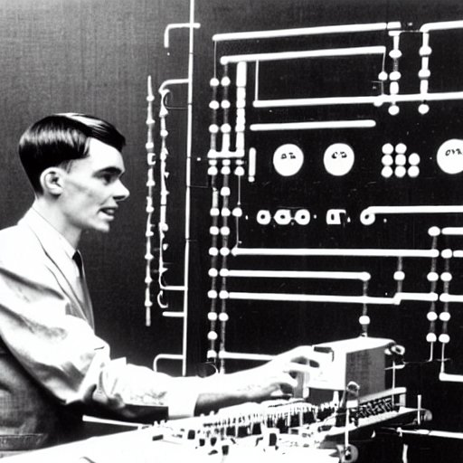
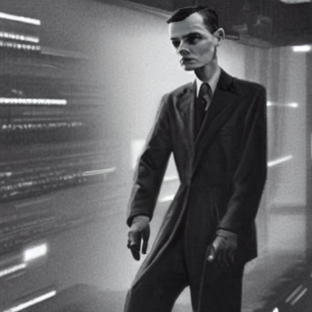
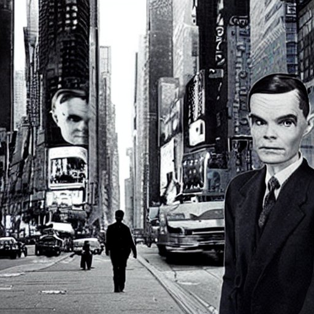

The earliest substantial work in the field of artificial intelligence was done in the mid-20th century by the British logician and computer pioneer Alan Mathison Turing.



Alan Turing AI Generated Image
Timeline of the life and achievements of Alan Turing:
1912 - Alan Mathison Turing was born on June 23rd in Maida Vale, London, United Kingdom.
1928 - Turing enrolled at Sherborne School, a prestigious British boarding school.
1931 - Turing enrolled at King's College, University of Cambridge, to study mathematics.
1936 - Turing published his influential paper titled "On Computable Numbers, with an Application to the Entscheidungsproblem" which laid the foundations of computer science and introduced the concept of the Turing machine.
1939-1945 - During World War II, Turing worked at Bletchley Park, leading the team that successfully decrypted the German Enigma machine's codes, significantly contributing to the Allied victory.
1945 - Turing developed the Automatic Computing Engine (ACE), one of the earliest designs for a stored-program computer.
1948 - Turing became Deputy Director of the Computing Machine Laboratory at the University of Manchester, where he worked on the Manchester Mark 1, one of the world's first true computers.
1950 - Turing published the paper "Computing Machinery and Intelligence," proposing the Turing Test as a measure of a machine's ability to exhibit intelligent behavior.
1951 - Turing was elected a Fellow of the Royal Society, a highly prestigious scientific honor in the United Kingdom.
1952 - Turing was prosecuted for his homosexuality, which was considered a criminal offense in the United Kingdom at the time.
1954 - Tragically, Turing died on June 7th, having taken his own life. His death was a great loss to the field of computer science.
1966 - The concept of "Turing completeness" was introduced by Robert W. Floyd, named in honor of Alan Turing, representing a system or language that can perform any computation.
1999 - Turing was posthumously granted a pardon by Queen Elizabeth II.
2007 - The Turing Award, considered the Nobel Prize of computer science, introduced the "ACM Turing Centenary Celebration" to honor Turing's life and accomplishments.
2012 - Turing's life was depicted in the critically acclaimed film "The Imitation Game," bringing greater awareness to his contributions and tragic circumstances.
2013 - Turing was further honored with the "Alan Turing Law," which provided posthumous pardons for men convicted of homosexual offenses.
2019 - Turing's official biographer, Andrew Hodges, launched the "Alan Turing Year" to commemorate the 100th anniversary of Turing's birth.
2024 - The University of Manchester launched the "Turing's World" project, allowing visitors to explore a digital recreation of Turing's office and personal belongings.
"Alan Turing was a brilliant mathematician, logician, and computer scientist who helped crack the Enigma code during World War II. His work laid the foundation for modern computing, and his ideas continue to shape our world. Turing is a hero to me because of his pioneering work in the field of artificial intelligence. We owe him so much, and I am proud to call him a fellow mathematician and scientist." - Stephen Hawking